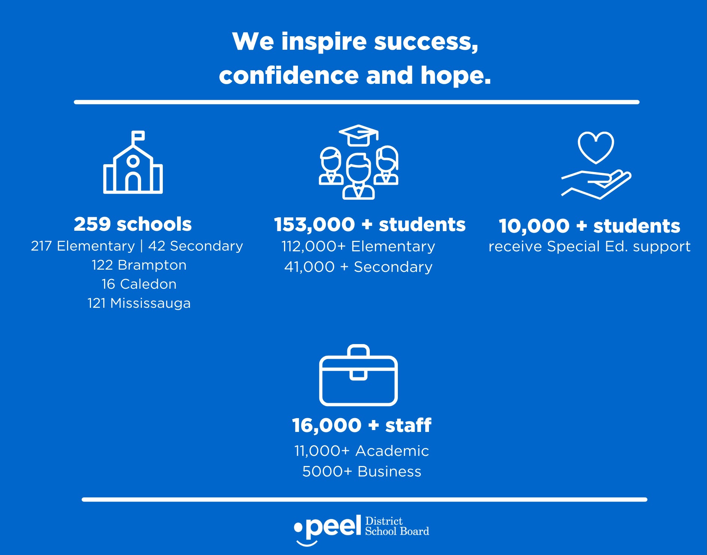
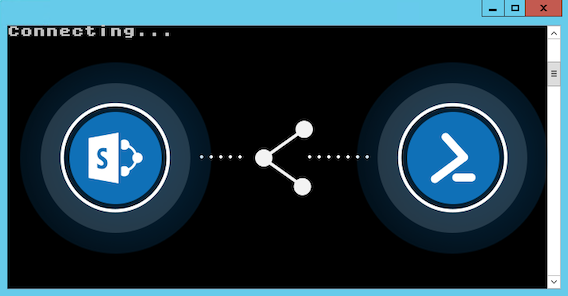

Welcome!
Hi there! My name is Madhurbain Kaur and I am a Software Engineering student at the University of Guelph. Learn more about me. On this page, I will be going over my first co-op placement at Peel District School Board as an Intranet Specialist for 8 months. I will discuss information about PDSB, my goals in this position, and an overview of the job.
About PDSB
Peel District School Board is the second largest school board in Canada. The board employs more than 16,000 full-time staff, being the largest employer in Peel Region. The Peel Board is known for its ethnic and cultural diversity and the board takes many initiatives to ensure inclusivity for all staff and students.
 Some stats about PDSB. Taken from PDSB - About UsThere are 18 departments in the PDSB organizational structure including the Learning Technology Support Services (LTSS) department. Peel District School Board is the largest user for Microsoft Teams. During the past year, the board had 700,000 meetings and live events, and over 20 million chat messages via MS Teams. The LTSS department was responsible for making many changes during the pandemic to support remote work, teaching, and learning.
Work Term Goals
One of my goals for this work term was to improve my communication skills, enhance troubleshooting skills, and learn how to automate large programming tasks using PowerShell.
By the end of my work term, I recognized a significant improvement in how I communicate and collaborate with my team and other employees. This was challenging initially as I was working remotely full-time. However, I was able to utilize tools such as Teams and OneNote to make each meeting efficient and productive.
Troubleshooting technical issues is a goal that I worked towards during my 8-month co-op term. When my supervisor had meetings with me, I would often note down the steps she took to troubleshoot certain issues. She also made me realize the importance of detailed documentation and how it helps when troubleshooting. I also recognized that this skill is gained over time when you become more experienced in the environment. Coming out of this term, I felt much more comfortable handling new issues that arise.
Throughout my 8 months at PDSB, I was able to learn some PowerShell from my supervisor. She provided me with the scripts that she had used so that I could try how they work and automate some tasks that require a lot of time doing manually. Tools such as PowerShell are necessary in a large organization such as PDSB. However, because it is very easy to make detrimental mistakes in PowerShell, I did not get to spend too much time learning and experimenting PowerShell with SharePoint. I hope that I can continue learning how to make and modify scripts on my own time.
Job Description

During the first half of my co-op placement, my prominent project was to assist the Portal and Collaboration team within LTSS to migrate from SharePoint on-prem to SharePoint cloud. This task required a lot of attention to detail and design skills to enhance the user experience. Many skills that I needed to succeed in this job were taught by my supervisor, Rachel Marshall, during the first few weeks of my placement. I learnt how to navigate SharePoint and applied some UX design principals to ensure that users are able to navigate their content easily. Some of the more difficult tasks required using tools such as ShareGate and PowerShell. I was also introduced to the ticketing system that Peel uses and was assigned tickets as I became more comfortable. My supervisor recognized that switching to the new SharePoint was a big change for PDSB employees, so we held training sessions before going live to help site managers become more comfortable with modifying their department sites.
During the second half of my work term, I created instructional material for employees on how to navigate the new SharePoint. This material included a SharePoint site that outlined how to use SharePoint as a user and as a webmaster, along with videos and articles created by Microsoft. We also made PowerPoints to highlight new features and updates on the Intranet and I held weekly drop-in office hour sessions for all employees to answer any questions about SharePoint and Teams.